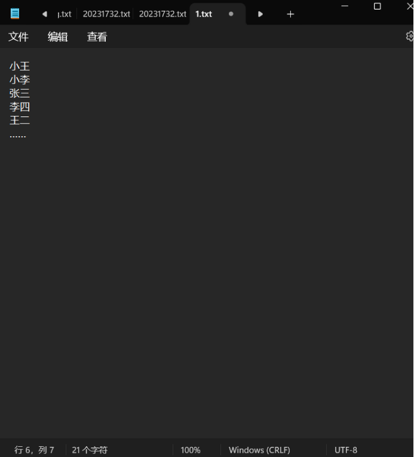

前言
简要介绍先锋。
简要介绍面前题的作用。
此处放置最近的更新时间和更新内容。
2024 网络部招新七天乐
简介
这是先锋网络部 2024 年的招新试题。
PS：做前提示：不用担心什么都看不懂，做不来，学习本身才是最重要的。
里程碑
注：时间安排均为计划，是暂定的，一切具体时间，以群内通知为准！
| 时间 | 内容 |
|---|---|
| 2024-09-02 | 面前题发布 & 开始报名 |
| 2024-09-20 | [面前题 & 报名] 提交截止 |
| 2024-09-21 | 开始面试 |
| 2024-09-28 | 面试结束 |
| 2024-09-30 | 结果公布 |
目录
- 1. Git 基础知识
- 2. markdown 写作
- 3. Linux 与 shell
- 5. 计算机相关知识 - 编程语言
- 6. 计算机相关知识 - 计算机网络
- 7. 计算机相关知识 - 数据结构与算法
寄语
题目不难，我们想要的是能够一起学习、一起进步、团结友善的同学，只要你认真学习、做题，大约每个部分花 1 到 2 小时就能完成一些内容。
题目简要说明
我们从今年，首次采用了题目难度分级标注的模式，以星级数标识，一般情况下，1 星最简单，5 星最复杂。我们在标注难度时，更加看重的是复杂程度，而不是题目的难度（但其实，有时候复杂就会导致难）。
难度指标（仅作参考！）：
- 1 星：可以通过搜索引擎 / AI 提问等方式，直接得到类似的答案，且解决步骤较为简单。
- 2 星：有较长的教程，跟着教程来，就能做出来。
- 3 星：要经过自己的学习和研究才能做出来的
- 4 星：必须要有相关知识的储备或者稍微深入的学习才能解决的，或者可能有多个协作的知识点
- 5 星：在 4 星基础上，有一定的开放性
Git 基础知识
本节目录
背景
Git 是一个分布式版本控制系统，用于高效地管理和跟踪代码的变更。它允许开发者在一个团队中协作开发，同时保持代码的版本历史记录，由于 Github 和 Gitee 等开源社区的存在、“开源包围商业”模式的成功，使得 Git 相关知识日渐重要。Git 的基本操作包括克隆仓库、创建分支、提交更改、合并分支等，还有一些高级操作，例如用 Actions 来实现代码的自动化测试等。在这部分，我们希望大家初步学习 git，并完成一些产出。
题目一 ⭐️
此题希望同学们能够入手 git 系列工具。题目要求如下：
⭐️自行了解 git，在 github/gitee 上，找到自己感兴趣的项目，并成功Star。⭐️下载并安装 Git。⭐️配置个人信息，并保证你能够通过 ssh 进行 git 操作。
完成此部分后，请将你的 git 配置信息截图，留在本地，等到面试时进行展示。
加分项： 利用文档，记录你踩过的坑。
（说明：此处的坑指的是，按照教程进行，但产生了某些教程里没提到的问题，导致你花了额外的时间去处理这些问题）
题目二 ⭐️⭐️
此题需要同学们进行一定的实操。题目要求如下：
⭐️⭐️在 github 上创建一个自己的开源仓库，命名为Hello-Git，并上传一个README.md文件（内容可以为空）。⭐️⭐️将新建的仓库克隆下来，并新建一个命名为 dev 的分支，并添加一个Hello-dev.txt文件，里面要有一首中文五言诗，诗的要求为，“包含我爱先锋的一首五言藏头诗”。⭐️⭐️将 dev 分支推送到你的仓库里，推送信息中，要包含你的学院全称。
完成此部分后，请将你的 git 仓库地址截图，留在本地，等到面试时，打开该网站进行展示。
加分项： 利用文档，记录你踩过的坑。
（说明：此处的坑指的是，按照教程进行，但产生了某些教程里没提到的问题，导致你花了额外的时间去处理这些问题）
题目三 ⭐️⭐️⭐️
⭐️⭐️⭐️完成了题目二后，直接切换回主分支，并自行发挥，做出一个以后一定会产生合并冲突的操作。⭐️⭐️⭐️将 dev 合并到你的主分支，并解决产生的冲突。- 在 GitHub 中寻找项目解决以下问题：
- 实现开机启动时自动登录校园网并且断连后自动重连
- 学校提供的资源访问控制系统并没有覆盖全部的校园内网服务，请实现使用 webvpn 来访问校园内网的任意网址
完成此部分后，请将你的成果截图，留在本地，等到面试时，进行展示。
加分项： 利用文档，详细记录你解决问题时的操作，可以使用 git diff。
题目四 ⭐️⭐️⭐️⭐️⭐️
⭐️⭐️⭐️⭐️⭐️在Hello-Git项目中添加一个index.html文件，内容为“Hello Git!”。使用 Github Pages，将你的Hello-Git项目部署到 Github Pages 上，形成一个简单的网页。
完成此部分后，请将你的网站地址记录，并在面试时进行展示。
markdown 写作
本节目录
背景
markdown 是一种轻量级标记语言，它允许人们使用易读易写的纯文本格式编写文档，然后转换成有效的 XHTML（或者 HTML）文档。Markdown 编写的文档可以导出 HTML 格式，也可以导出 PDF 格式，甚至可以导出图片格式。
同时，它的应用也较为广泛，包括但不限于：博客、文档编写、代码注释、邮件编写、微信公众号文章编写、大模型对话等。
所以，本部分我们需要大家简要学一下 markdown。
题目一 ⭐️
- 给出
markdown的应用场景的实例，越多越好。 - 简要学习
markdown的语法。
最后，你要将你的答案，以 markdown 的格式，进行保存。到面试时，进行展示。
加分项： 将你的答案，推送到在 git 题中，创建的仓库的 dev 或主分支中。
题目二 ⭐️⭐️
- 任选一个开源项目，为它重写 README.md 文件，并提交到你的仓库中。
- 较深学习
markdown的语法，尽量掌握数学公式的书写方式。
最后，你要将你的答案，以 markdown 的格式，进行保存。到面试时，进行展示。
加分项： 将你的产出，推送到在 git 题中，创建的仓库的 dev 或主分支中。
题目三 ⭐️⭐️⭐️⭐️⭐️
- 搭建 Lenet 并基于 CIFAR10 训练，用 markdown 写下自己学习的过程以及代码说明。
最后，你要将你的答案，以 markdown 的格式，进行保存。到面试时，进行展示。
加分项： 将你的产出，推送到在 git 题中，创建的仓库的 dev 或主分支中。
题目四 ⭐️⭐️⭐️⭐️⭐️
“markdown转html用十几行正则就可以搞定，为什么要搞那么复杂？” —— 某乎
⭐️⭐️Markdown, HTML 是什么？有何区别？⭐️⭐️⭐️⭐️⭐️尝试使用正则表达式配合一个编程语言实现能将 Markdown 一部分语法渲染为 HTML 的解释器（备注：一切从简，目的是尝试，感兴趣的推荐先了解一下设计模式）⭐️⭐️⭐️结合你的实践，你认可这个说法吗？给出理由。
Linux 与 shell
本节目录
背景
Linux 是一种自由和开放源代码的操作系统，它基于 Unix，并具有强大的功能和灵活性。在 Linux 环境中，你可以使用各种命令行工具和 shell 脚本来自动化任务、管理文件和目录。
在硬件开发、驱动开发、机器人等领域，linux 几乎是绕不开的；在国产硬件、国产操作系统等基础领域，linux 也几乎是绕不开的，甚至华为的鸿蒙系统，最开始也是基于 linux 的。
在本部分，主要要求学习掌握 linux 的一些内容。但其实，最好的老师是熟练，所以，本部分题目不多。
题目一 ⭐️⭐️
- 使用任意方式，得到 Linux 终端环境。
- 在你的 Linux 里，准备一些第三方工具。你需要先自己假设你需要干什么，然后安装对应的工具，并说明理由。（例如，想要搞硬件/嵌入式，就可能需要 gdb）
最后，你要将你的答案，进行保存。到面试时，进行展示。
加分项： 将你的产出，推送到在 git 题中，创建的仓库的 dev 或主分支中。
题目二 ⭐️⭐️⭐️
⭐️⭐️自行简要学习 shell 脚本语法。⭐️⭐️⭐️编写一个 shell 脚本，实现以下功能：- 读取一个文件，文件内容为数字，每行一个数字。
- 计算并输出这些数字的总和和平均值。
- 将数字的总和和平均值，输出到一个 json 文件中。
⭐️⭐️⭐️⭐️编写一个 shell 脚本，实现以下功能：- 编写 shell 脚本，在电脑开机时播放
原神启动！。
- 编写 shell 脚本，在电脑开机时播放
最后，你要将你的答案，进行保存。到面试时，现场运行并进行展示。
加分项： 将你的产出，推送到在 git 题中，创建的仓库的 dev 或主分支中。
题目三 ⭐️⭐️⭐️⭐️⭐️
⭐️⭐️⭐️⭐️⭐️ 菜鸟喵在同行的压力下，他放弃了开发，转而去当起了体育老师。正好遇上了运动会，有 10000 名学生报名（学生不重名），结果实际上只来了 9990 人，现在你有两份名单，一份是当时报名的学生名单（txt 文件），一份是实际报道的名单，格式均为如下图所示（一行一个名字）。校长因为人没有全齐大发雷霆，这可怎么办呢，好在菜鸟喵是程序员出身的，现在你需要利用你学过的 shell 脚本知识来迅速查出那几个没来的人……经过了好几天激烈的比赛，总算诞生了 1000 名获奖选手，但是却只有他们的名字，而没有照片，为了防止有人冒领，现在你有当时参赛的 10000 名选手的照片，命名格式为“编号+名字.jpg”，还有一个 name.txt 文件，包含获奖选手的姓名，格式同名单，你要利用所学的 shell 知识在所有照片中找到获奖选手的名单，放到一个名为“winners_pic”的文件夹里。

你的任务是：
- 完成第一个 shell 脚本，命名为
data_gen.sh，作用是：- 生成两个文件，一个名为
students.txt，包含 10000 个不重复的名字，每个名字占一行。 - 生成另一个文件，名为
students_attend.txt，包含 9990 个名字，每个名字占一行。这些名字是从students.txt中随机选取的。
- 生成两个文件，一个名为
- 完成第二个 shell 脚本，命名为
find_winners.sh，作用是：- 读取
name.txt文件，获取获奖选手的名字。 - 在所有照片中找到这些获奖选手的照片，并将它们复制到名为
winners_pic的文件夹中。
- 读取
最后，你要将你的答案，进行保存。到面试时，现场运行并进行展示。
加分项： 将你的产出，推送到在 git 题中，创建的仓库的 dev 或主分支中。
题目四 ⭐️⭐️⭐️⭐️⭐️
⭐️⭐️⭐️⭐️⭐️ 小 G 同学的服务运行在 Ubuntu 系统中，并且登录程序会自动记录每一个登录请求的信息在 log.log 文件下，请你帮他写一个 shell 脚本，定时自动备份（若相较于上次备份，该文件内容没有变化，则不进行本次备份）
最后，你要将你的答案，进行保存。到面试时，现场运行并进行展示。
加分项： 将你的产出，推送到在 git 题中，创建的仓库的 dev 或主分支中。
计算机相关知识 - 编程语言
本节目录
背景
编程语言是计算机程序设计的基础，在我看来，编程的思想是一样的，有区别的是表达的方式。而不同的编程语言在我看来，就是不同的表达方式。所以，同学们可以广泛的学习学习编程语言，以便找到适合自己的语言。
本部分，主要从广度来考核。
题目一 ⭐️⭐️
⭐️配置编程环境，要求至少 1 种，并写出 helloworld 的代码：
-
c/cpp：基础、灵活、高效
-
rust：高效、零成本抽象、内存安全
-
python：简单、易用、灵活
-
go：简单、高效、并发
-
java：简单、易用、面向对象、web 开发极为常用
-
javascript：简单、易用、可拓展、前端
-
ArkTS：华为首推，⭐️⭐️
-
⭐️⭐️简单了解一下，各语言的优缺点，并写出自己的看法。 -
⭐️⭐️选用任意语言，做一个经典的骰子游戏，规则如下：每个骰子有六面，点数分别为1、2、3、4、5、6。 游戏者在程序开始时输入一个无符号整数，作为产生随机数的种子。 每轮投两次骰子： 第一轮如果和数为7或11则为胜，游戏结束； 和数为2、3或12则为负，游戏结束； 和数为其它值则将此值作为自己的点数，继续第二轮、第三轮... 直到某轮的和数等于点数则取胜，若在此前出现和数为7则为负。
最后，你要将你的计算机带到面试处，进行展示。
加分项： 将你的学习流程、踩的坑，记录为 markdown 文档保存。
题目二 ⭐️⭐️⭐️⭐️
⭐️⭐️⭐️菜鸟喵的免费培训班终于开张了，在经过一段时间的学习后，渣渣喵也大致掌握了编程的基本知识和能力。菜鸟喵想要验收一下这段时间的教学成果，于是给大家发布了一个任务：用任意编程语言做一个程序，能够用来管理学生信息，包括添加，删除，排序，保存，查看等功能，学生信息有：名字，年龄，性别，学号，爱好，绩点等。（提示：可以尝试用 C 语言的结构体和链表，或者用 Python 的列表等）（保存指的是以文件形式保存）⭐️⭐️⭐️⭐️对于某些语言(类似 C/Cpp)，它们的编译过程可以是很复杂的，所以，在这里你需要详细地学习一下，C 语言的编译过程，编译器可以选用 gcc，当然也可以是 clang 等。最后，你需要进行表述。
最后，你要将你的答案，进行保存。到面试时，进行展示。
加分项： 将你的产出，推送到在 git 题中，创建的仓库的 dev 或主分支中。
计算机相关知识 - 计算机网络
本节目录
背景
计算机网络作为计算机科学领域的基础学科，是非常重要的。特别是随着人工智能、大数据、云计算等技术的迅猛发展，大模型的训练和应用日益成为热点话题，这使得算力问题愈发凸显。
一方面，大模型的训练需要极高的计算资源，单一设备的算力往往难以满足需求。因此，分布式计算成为了解决这一问题的关键。通过将计算任务分散到多个节点上，分布式计算不仅提高了计算效率，还降低了成本，使得大模型的训练和应用成为可能。在这个过程中，计算机网络扮演着至关重要的角色，它为分布式计算提供了数据传输和资源共享的通道。
所以，本部分我们主要需要大家学习一下计算机网络的相关知识，为后续的内容打基础。
题目一 ⭐️⭐️
⭐️⭐️掌握一些基础知识，比如七层模型、五层模型等。⭐️⭐️对比 HTTP 协议与 HTTPS 协议。⭐️⭐️⭐️区分辨别socket和websocket。⭐️⭐️假如你拥有一个域名和 Web 服务器，你该如何做来让你的好朋友能在互联网通过域名访问你的 Web 服务器？
最后，你要将你的答案记录为文档进行保存。到面试时，进行展示。
加分项： 将你的产出，推送到在 git 题中，创建的仓库的 dev 或主分支中。
题目二 ⭐️⭐️⭐️
小王的老师让他去在Google scholar上搜索一篇资料
但是他经过尝试，无论用手机还是电脑都无法打开这个网站。
小强告诉小王，他有一个"盗版网站"跟那个 Google scholar 的功能是一样的，也能搜索到资料。小王试了一下，发现确实可以用。不过小王有些疑惑：
① 当他打开这个替代网站时，我的电脑、网络传输传输过程以及远程的服务器等相关的设备上都发生了什么？
② 而最开始的打不开Google Scholar，问题出现在哪些步骤？
提示：可能涉及到 "长城防火墙"，可以在 github 上搜索到教学/讨论贴。
最后，你要将你的答案记录为文档进行保存。到面试时，进行展示。
加分项： 将你的产出，推送到在 git 题中，创建的仓库的 dev 或主分支中。
题目三 ⭐️⭐️⭐️
第二天，小王把搜到的资料交给老师后，提到了了自己昨天遇到的事情，并且跟老师说了小强给他的"盗版网站"，老师并没有说什么，只是让小王再去这里帮他再下一个文件。
可是当小王下载的时候发现下载速度非常慢，有的文件甚至无法下载，于是他在网上搜索怎么解决，有人说使用国内的镜像站可以解决。看到镜像站，小王想到昨天那个学术搜索好像也叫什么XX 镜像站。
于是小王开始思考：
- ① 镜像站和原来的网站有什么区别？
- ② 他也想做一个镜像站怎么做？可能需要什么技术或设备？
- ③ 如果让你也去做一个网站，你希望做一个什么样的网站？
最后，你要将你的答案记录为文档进行保存。到面试时，进行展示。
加分项： 将你的产出，推送到在 git 题中，创建的仓库的 dev 或主分支中。
题目四 ⭐️⭐️⭐️⭐️
某天，小王和在美国留学的表姐润叶聊天时提到了这些问题，润叶说她那访问这些网站、下载文件都没有问题，还说你以后有问题的话她可以帮忙
为了不麻烦表姐，小王说让她把电脑开着，自己用远程控制软件操作就行：
- ① 你远程控制她的电脑，在她的浏览器输入网址之后,她的电脑打开这个网站。
- ② 打开网站后，你找到了你需要的资料，并且下载到她的电脑上了，之后你用 WeChat 将你需要的资料发回来了。
过了几天，小强告诉小王有一个软件可以帮助小王打开无法打开的网站,同时还可以加速下载有些文件的速度。你打开看了看，里面有一个http 代理。
这个东西是干什么的？以及它的实现原理又分为哪几步？
你联想到前几天操控表姐的电脑的过程，感觉其中似乎有哪些步骤非常相似，请指出两处。
最后，你要将你的答案记录为文档进行保存。到面试时，进行展示。
加分项： 将你的产出，推送到在 git 题中，创建的仓库的 dev 或主分支中。
题目五 ⭐️⭐️⭐️⭐️
小 G 同学刚刚学完 HTTP 协议，写了一个登陆系统的接口，他偷懒地直接使用 GET 请求来处理登录的数据，被大 P 同学得知后教训了一顿，并且大 P 同学还发现这个登录系统能被简单而致命的 SQL 注入 攻击直接绕过登录验证… 登陆数据发送至：116.198.235.185:721
据悉，小 G 同学的代码有一部分是这样写的：
-- Retrieve the username and password parameters [From GET]
SELECT * FROM users WHERE username='{username}' AND password='{password}';
⭐️⭐️⭐️⭐️根据题目信息尝试通过漏洞登录小 G 同学的后台，接收服务器返回的信息，注意：请在提交的请求信息内包含你的学号用于记录你的尝试(只需绕过登录即可，请不要进行其他的操作，是无效的)⭐️⭐️⭐️⭐️请诊断小 G 同学这些操作中不安全，不合理的部分，并且提出修改建议
最后，你要将你的答案记录为文档进行保存。到面试时，进行展示。
加分项： 将你的产出，推送到在 git 题中，创建的仓库的 dev 或主分支中。
计算机相关知识 - 数据结构与算法
本节目录
背景
题目一 ⭐️⭐️⭐️
“哇数学可真是太难了，我刚学完分数化简，可是看到 $\frac{1428571}{2857142}$ 这种分式就头大，还好大佬教了我怎么做，只要用约分就好了！把分子分母相同的数字全部约掉，也就是把分母的 857142 和分子的 428571 划掉，数学，真是奇妙呢！”
补充说明：分子分母只要是相同数字即可一对一划掉，若存在一对多情况，从后往前消除（如题中所给例子分母只有一个 1，相对应分子消除的 1 为最后一位个位数上的 1）
⭐️⭐️⭐️ 尝试写一个程序得到足够多个这样的大分式（不需要完全正确，但你应该理解自己所写的程序是如何运作的，并有足够清晰的注释）
最后，你要将你的答案保存。到面试时，现场运行进行展示。
加分项： 将你的产出，推送到在 git 题中，创建的仓库的 dev 或主分支中。
题目二 ⭐️⭐️⭐️⭐️
你有足够多的1分，2分，5分硬币，想要凑出n元钱(n为正整数)，有多少种方法？
input : n
output : 不同方法的个数
⭐️了解算法的概念，了解如何评估算法的效率⭐️⭐️⭐️用递归或循环来实现求解这个问题⭐️⭐️⭐️⭐️用其他方法解决这个问题，并分析时间复杂度和空间复杂度
最后，你要将你的答案保存。到面试时，现场运行进行展示。
加分项： 将你的产出，推送到在 git 题中，创建的仓库的 dev 或主分支中。
题目三 ⭐️⭐️⭐️⭐️
编程语言。当其他的体育老师还在皱眉时，菜鸟喵就把上述的问题解决了，令他们惊叹不已。菜鸟喵的故事很快传开来了，渣渣喵也很惊讶，居然有这么厉害的体育老师，想到他的程序员梦想，渣渣喵向菜鸟喵请教。看着这个稚气的青年，菜鸟喵决定先给他出一道题，看看他的底子如何。
为了帮助一窍不通渣渣喵赢得菜鸟喵的好感，现在你需要用任意编程语言解决以下问题：
10 只猴子摘了一堆桃，本来想平分，但是总架不住有贪心的猴……
晚上，1 号猴偷偷起来，先吃了 1 个解解馋，再拿走了剩下的一半藏起来，干完这一切后就心满意足地回去睡觉了；然后 2 号猴又偷偷爬起了，做了和 1 号猴一样的事，随后每只猴都做了一样的事……
⭐️⭐️直到 10 号猴起来的时候发现只剩 2 个了。请问原本有几个桃？
⭐️⭐️⭐️如果题目改为，100 号猴起来时，发现剩下 2 个，那么原本有多少个桃？
input : n -> 第n号猴
: m -> 剩下m个桃子
output : 原本桃子的个数
最后，你要将你的答案保存。到面试时，现场运行进行展示。
加分项： 将你的产出，推送到在 git 题中，创建的仓库的 dev 或主分支中。
题目四 ⭐️⭐️⭐️⭐️
渣渣喵很高兴地交上了作业，希望得到一番夸赞，谁知菜鸟喵只是简单地说了一句:"还不错嘛，那这道题怎么样?"渣渣喵懵了。请用任意编程语言设计一个程序，能够输入两个 99 位的数字，并输出它们相乘的结果。现在你还能应对自如吗?
input : n -> 99，代表位数
: x -> 第一个 n 位的数字
: y -> 第二个 n 位的数字
output : 相乘结果
最后，你要将你的答案保存。到面试时，现场运行进行展示。
加分项： 将你的产出，推送到在 git 题中，创建的仓库的 dev 或主分支中。
2024 硬件部招新面前题
此处将会添加题目简介
后记
此题将会沿用，知识点可能不会变，但题目是会变的。